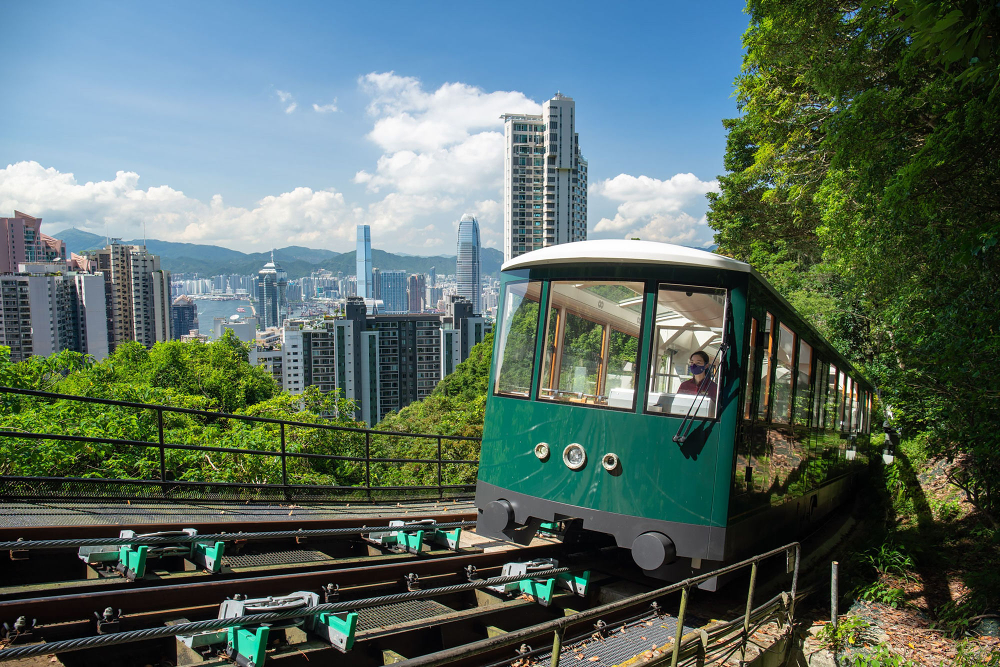

印Field Catalogue · Sun–Thu · Eat / Drink / Wander
A working catalogue of stops, grouped by neighbourhood so each day stays on one patch of the map. Tap a day; the seal marks its anchor.

Essentials
The handful of things that make the rest run smoothly — arrival, the Octopus card, two bookings worth doing in advance, and what didn't make the cut.